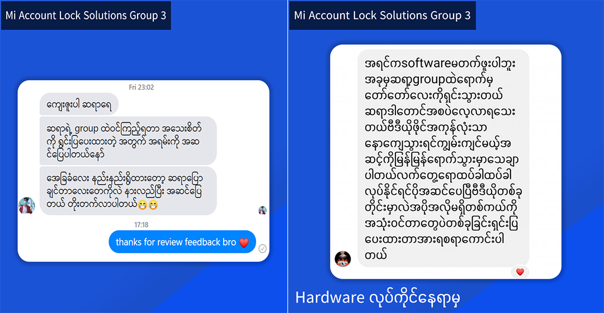
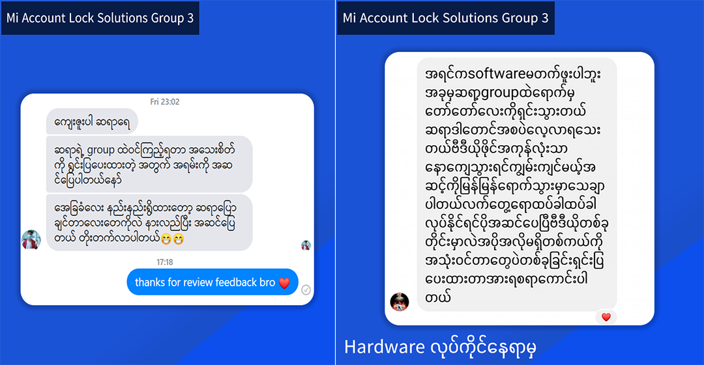

Contact
အိမ်မှာနေရင်း မိမိကိုယ်တိုင် self study လုပ်ချင်သူများအတွက် Solutions Video များတင်ထားပေး Groupဖြစ်ပါတယ် Group တွင် Video ၂၀၀ ကျော်တင်ထားပြီးဖြစ်ပါတယ် Group ဝင်ကြေးသွင်းကာ Group member ဝင်ပြီး သင်ခန်းစာများကိုလေ့လာနိုင်ပါပြီ
ဘာတွေတင်ထားလဲ info ဖတ်ကြည့်လိုက်ပါ မိမိ လေ့လာလိုသော အကြောင်းအရာများပါလျှင် မန်ဘာကြေးသွင်းပြီးလေ့လာနိုင်ပါပြီ စျေးနှုန်းကလဲ 50% Off ပေးထားတဲ့အတွက်အထူးတန်ပါမယ် 50,000 to only 25,000MMK Only
 
Driver နှင့် Free Misc ဖိုင်များစုစည်းမှု
Remoter and File Sellers

Driver နှင့် Free Misc ဖိုင်များစုစည်းမှု
Remoter and File Sellers